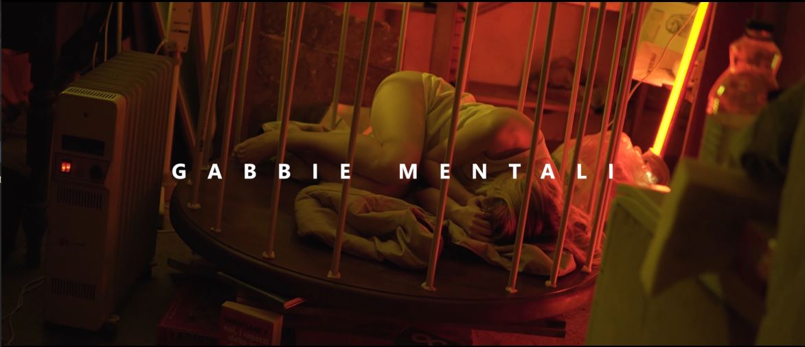

Le gabbie mentali sono strutture rigide di pensiero costruite nel tempo, le cui sbarre sono gli
insegnamenti ricevuti, le regole non discusse, i giudizi, le aspettative su di sé e sugli altri.
Metallo fuso in una mescola di antiche paure e bisogni indistinti; solitamente, la paura di quel che
potrebbe accadere.
Il video vuole rappresentare il concetto di "Gabbia mentale", cioè quelle convinzioni limitanti che ci
mettono in difficoltà e ci impediscono di crescere. Queste gabbie si formano per paura del
cambiamento, abitudini che diventano comode o traumi non risolti. Il protagonista vive un conflitto
tra il suo mondo interiore e la realtà esterna, e questo lo fa sentire bloccato, come se fosse
intrappolato in una gabbia che lo separa dalla sua vera visione di sé.
Il video utilizza un linguaggio moderno e visivamente semplice per rappresentare questo concetto
psicologico.
Le immagini mostrano una realtà caotica e senza tempo, simbolo della mente umana, e la
performance dell'attrice porta il messaggio emotivo. La musica sottolinea le immagini e aiuta a
creare un’atmosfera intensa.
L’obiettivo è far capire come le gabbie mentali possano portare a un isolamento, impedendo alle
persone di affrontare la realtà. Il video punta a sensibilizzare, soprattutto i giovani, sui pericoli di
vivere rinchiusi in questi schemi mentali, e mostra come solo affrontando il proprio turbamento si
possa trovare la forza per cambiare.
Art Direction
L’obiettivo di questo video è creare un atmosfera (immaginaria, fuori dal mondo) che vuole
rappresentare ciò che c’è all’interno del nostro inconscio. I colori utilizzati sono anche essi surreali,
e vivaci nella parte in cui si tende a rappresentare quello che la protagonista vede come stato di
benessere, interrotto invece da colori freddi e cupi quando questo stato di benessere viene
interrotto.

Fotografia
Le riprese sono un alternarsi di dettagli e riprese a campi larghi dando dinamismo al video. I colori
utilizzati vogliono rappresentare le emozioni della protagonista in momenti precisi del processo e
progredire della condizione descritta.
Video
Il montaggio del video può essere diviso in due tempi, il video inizia con un montaggio tranquillo e
descrittivo arrivando ad una parte clou (apice) nella quale il ritmo si fa più caotico e frenetico per
poi riprendere nell’ultima parte del video la prima atmosfera descritta.